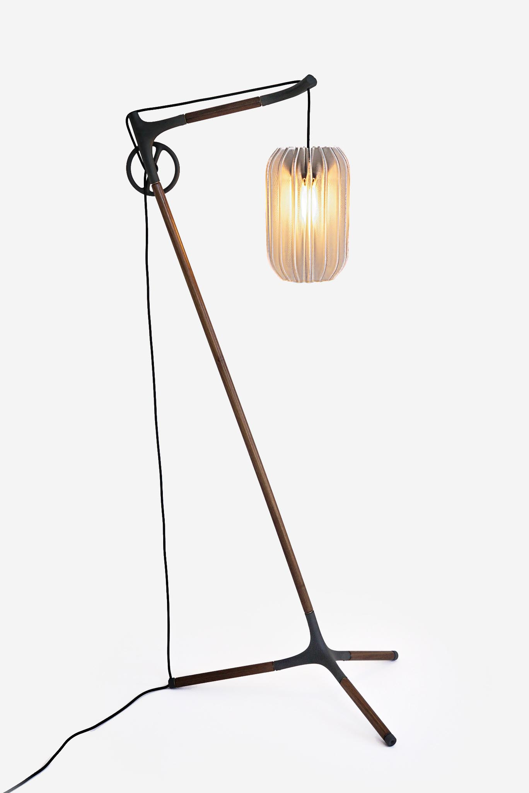
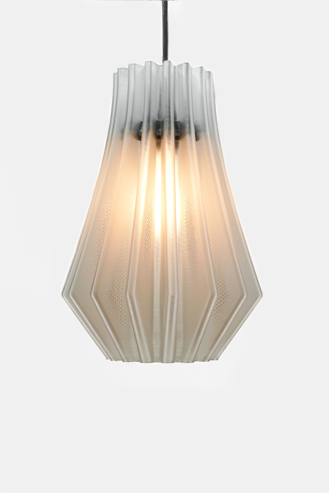
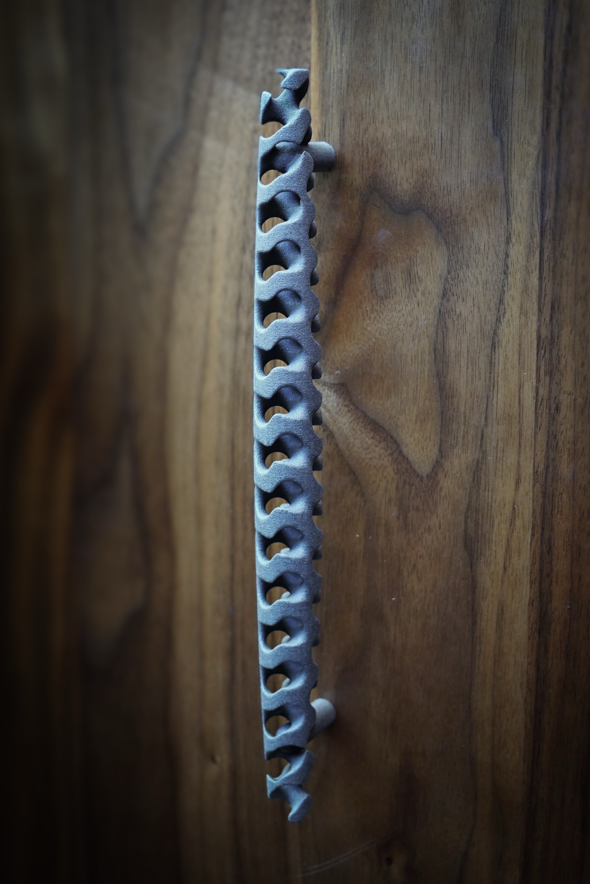
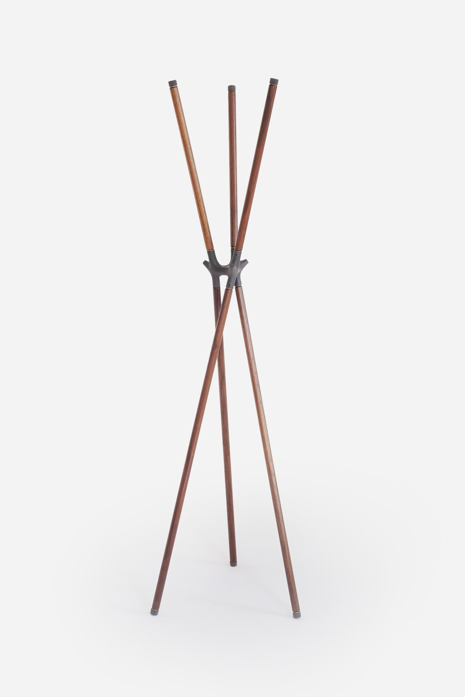
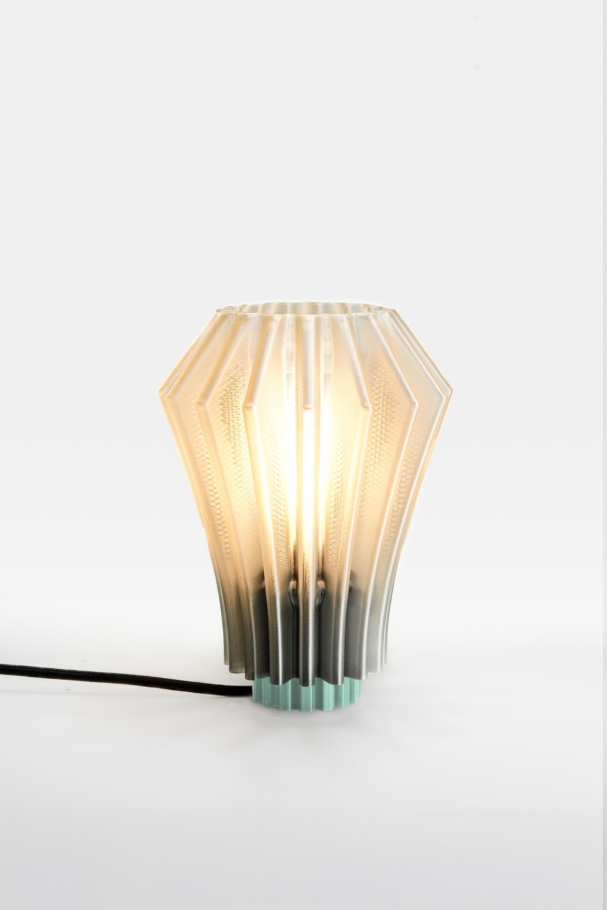
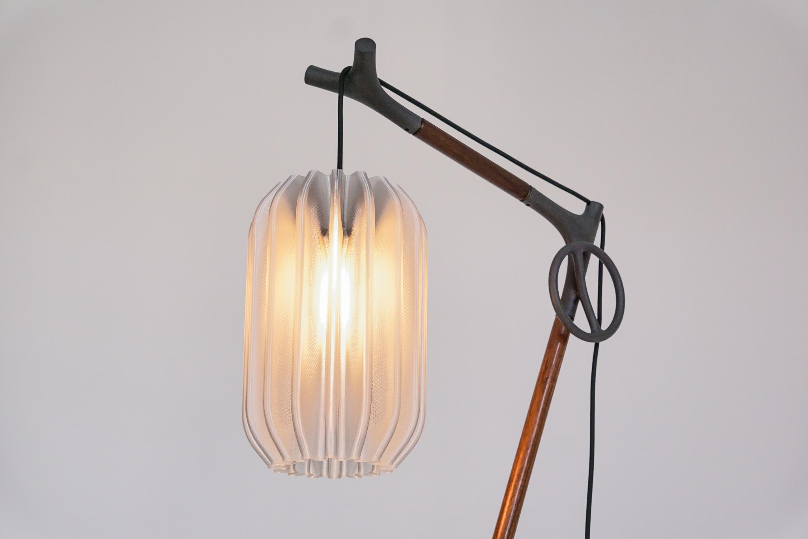

About Voldt
Algorithmic Craft. Human hands
meet machine precision.
Voldt is a two-person design and fabrication studio creating furniture, lighting, and architectural hardware—objects born in code, refined by hand, and made to live with you for decades.
- —Designed and made in our Michigan studio
- —Released as curated collections; custom work by quote
- —Recycled and recyclable materials where performance allows


Code as a design material
We treat computation the way traditional studios treat clay, joinery, or casting: as a craft discipline. Algorithms aren't an aesthetic overlay—they're the underlying design logic that creates proportion, texture, and coherent variation across a collection.
This is why our work feels unified: not one-offs, but a design language you can collect over time.
From architecture to everyday objects
We're two licensed architects turned computational designers. We met at the Taubman School of Architecture in Ann Arbor, where we learned to use data, code, and fabrication as design tools. Voldt began when we realized those tools could extend beyond buildings into the objects you touch every day—pulls, lights, furniture—scaled down, refined, and made personal.

Collections, released over time
Our work is organized into evolving series—each piece validated in our studio before it's released.

VOLDT Hardware
Configurable architectural hardware with authored variation

PolyFrames
Made-to-order furniture and lighting built from walnut and precision 3D-printed nodes
Detroit Lights
Algorithmic lighting exploring Art Deco geometry and texture
Design Fabrication Finish

Algorithmic Design
We write design rules that generate coherent variation—calibrated for structure, proportion, and assembly.

Digital Fabrication
CNC machining and additive manufacturing translate those rules into parts with precision tolerances.

Assembly & Finish
Every piece is assembled, hand-finished, inspected, and packed in-house.
Small studio, full authorship: the people who design the work also make it.
Materials chosen for performance—and kept honest
We select materials for longevity, tactile quality, and repairability. Where performance allows, we prioritize recycled and recyclable polymers and low-waste additive processes that use only what's needed.
Common materials across our work include solid American walnut, precision metal details, and engineering-grade 3D-printed polymers.




Made in Michigan—by design
We manufacture locally not as a checkbox, but as a commitment to quality and iteration. Keeping design and fabrication close lets us prototype quickly, control tolerances, and refine details until the object feels inevitable—clean transitions, crisp edges, stable assemblies, and surfaces meant to be touched.
Typical made-to-order lead times are listed on each product page.
Recognition & exhibitions
Selected exhibitions and showcases that reflect the work's direction and rigor.
2026
ICFF Launchpad
VOLDT Hardware — New York, NY
2025
ArtPrize, winner in Design
Manufactured Memory — Grand Rapids, MI
2024
Detroit Marche
Additive Manufacturer Showcase — Detroit, MI
Bring VOLDT into your space.
Explore the collections, configure VOLDT hardware, or request a project quote for reconfiguration and bespoke work.